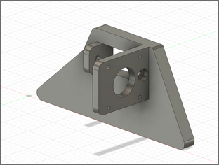
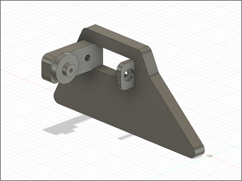
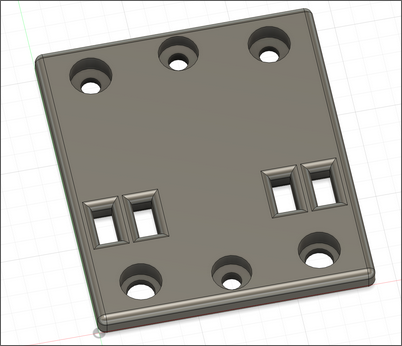
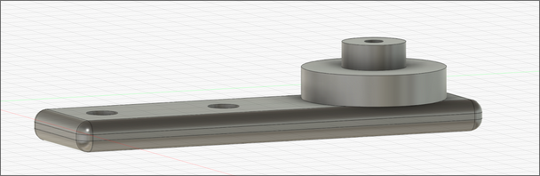

LINUS - Microcontrollers (ECE 4760) Final Project - Mechanical Hardware
Mechanical Design
The mechanical design for LINUS was largely inspired by the structure of low-cost 3D printers. We chose a
belt drive system for its simplicity, affordability, and ease of implementation. The core frame is
constructed using two aluminum T-slot extrusions: one 40x20mm and one 20x20mm. The 40x20 T-slot serves as
the main X-axis rail, along which the 20x20 T-slot (Y-axis) is mounted. The drawing head (pen holder) moves
along the Y-axis, enabling the machine to reach any point within its working area.
Motion in both axes is powered by stepper motors driving timing belts. On each axis, the belt loops through
the central slot in the T-slot rail, connecting to a motor pulley at one end and an idler pulley at the
other. The idler pulley maintains belt tension and alignment to prevent skipping. Getting the belt routing
and tensioning system to work reliably required several rounds of iteration.
Mechanical Components
X-axis Mounting Plate (motor)
This component anchors the X-axis stepper motor. The motor bolts to the vertical plate, while the 40x20
T-slot rail fits into the rectangular cutout and is secured in place via bolts. This sliding mount allows
for adjustable belt tensioning by loosening the blots, shifting the assembly outward, and then
re-tightening.

X-axis Mounting Plate (motor)
X-axis Mounting Plate (idler pulley)
This is the matching plate on the opposite side of the X-axis. It houses the idler pulley, implemented
as a
bearing press-fit into the mount. The T-slot rail passes through just like on the motor side, and the
same
sliding method can be used to apply tension to the belt.

X-axis Mounting Plate (idler pulley)
Y-axis Mounting Plate (x2)
The two identical plates support the Y-axis rail and connect it to the X-axis motion system. These
plates
mount to and sandwich the Y-axis rail as well as the bearings or wheels that allow it to slide along the
X-axis. This provides smooth motion and stability for the Y-axis rail. Additionally, the belt is routed
through the rectangular slots in these plates and glued down to secure it.

Y-axis Mounting Plate
Y-axis Motor Mount
This mount holds the Y-axis stepper motor in place and aligns its shaft with the belt path. Like the
X-axis
motor mount, it attaches to the 20x20 T-slot rail and allows for belt tensioning through a simple
sliding
mechanism.
Y-axis Idler Pulley Mount
Located on the opposite end of the Y-axis rail, this mount holds the idler pulley bearing. It works just
like the X-axis version, with a press-fit bearing and a sliding design to adjust tension as needed.

Y-axis Idler Pulley Mount
Idler Pulley Half (x2)
These circular components complete the idler pulley assemblies. They press-fit onto the other side of
the
bearing (the side not already fitted onto the axes), This forms a low-friction guide with an outer lip
to
prevent the belt from slipping off.
Pen Holder
The pen holder grips the drawing tool (marker) and is mounted to the Y-axis carriage, which in turn
moves
along the X-axis. It includes a set screw to hold the marker firmly in place while minimizing play. The
holder also serves as a termination point for the Y-axis belt, using the same slot and glue strategy
described for the Y-axis mounting plate.
Design challenges
While developing the mechanical system, we ran into several issues that required redesigns or significant
rework.
Unstable Y-axis
Our original mounting approach lacked rigidity, causing the Y-axis to tilt as the weight
distribution changed when the pen moved from one side of the axis to the other. This caused the marker to
lift from the paper when we didn’t want it to. In order to fix this problem we added a lower plate to
sandwich the Y-axis plate. That’s why there are two Y-axis mounting plates.
Belt Skipping
Without proper tension, the belts occasionally skipped teeth on the pulleys, leading to
inaccuracies in the drawing. This was especially a problem at higher motor speeds. This was solved by
integrating half of the idler pulley assembly into the axes mounts. This prevented the pulley from slipping
and causing the belt to skip.
Poor Belt Fastening
The original design plan was to secure the belts with zip ties after looping it through
the slots in the mounting plates. However, there wasn’t enough room in the T-slot rails to make this
feasible without creating a lot of unnecessary friction. As a result we decided to glue them down, making a
less pretty but more functional design.
T-slot vs V-slot Rails
We built the system using T-slot aluminum extrusions, primarily because we weren’t
initially aware of V-slot rails. V-slots rails are specifically designed for smoother motion, as their shape
naturally guides V-groove wheels along a consistent path. While the T-slot rails ultimately worked, they
required more effort to get right. Since T-slots don’t inherently contain wheel tracking, we had to make
careful design adjustments to ensure the wheels aligned properly and rolled smoothly along the rails.
Shifting and Instability During Motion
Abrupt movements, especially when changing direction quickly - would
sometimes cause the entire device to slide slightly. Since the machine and the paper were not rigidly
connected this meant the device could shift while the paper stayed in place, ruining the alignment of the
drawing. To solve this, we added a large cardboard base underneath the machine and taped the paper directly
to it. This way, any motion would cause both the device and the paper to shift together, preserving relative
positioning and improving drawing consistency.